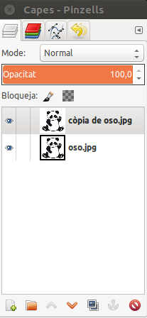

TUTORIAL GIF
Paso 1: Pulsa en Archivo --> Abrir y buscar la imagen que quieres hacer el gif, como por ejemplo este panda.

Paso 2: Luego en la parte de capas pinchamos en la imagen y después le damos a "Duplicar la capa".
Paso 3: Seleccionamos la copia de la capa --> Pinchem en Capes --> Transformar --> Voltear horizontalmente.
Paso 4: Pulsamos en Archivo --> Exportar como. --> Li ponemos un nombre y la extension GIF.
Paso 5: Marcamos la casilla "Como animación" --> Ponemos como retraso entre cuadros cuando no este especificado 250 mil·lisegundos.

Paso 6: Ya tendremos un GIF como este.